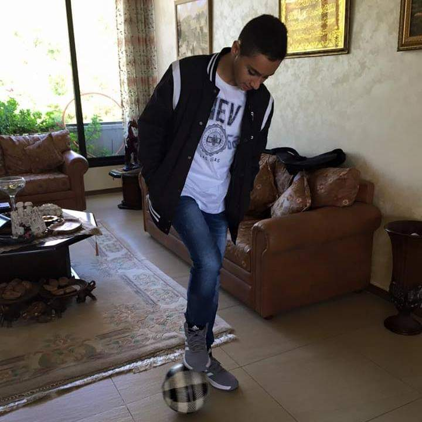

Hello, I am Tarek
A driven student with a quick perception, and recognition of problems along with critical thinking skills and analysis. Intrigued by financial markets, models, and derivatives in particular. In addition to strategy development, formulation, and implementation. With an aspiration to integrate both fields in my future. Beyond business topics, I am highly interested in digital humanitiies, and completed a couple of projects within that domain.
Check Out My Digital Humanities WorkSustainability Work & Initiatives
Driven by my passion to have a positive impact on our planet, and the quality of life in my community I set out to take action that crystalized in the following initiatives
WorkAid For Youth (WAY)
Eco-Buddy
Created an initiative aiming to financially assist marginalized groups by disseminating modern skills capable of directly improving their job prospects, and financial literacy skills ensuring sustainable quality of life improvement
Played a critical part in ideation and platform development of an app aiming to grow and ingrain sustainable habits in the youth through challenges and activities in collaboration with third parties
Volunteering Experience
Moved by the desire to help my community, and inspired by the effort of the Lebanese Red Cross on all fronts and the key role they have in helping the community, I decided to enlist as a Red Cross volunteer, signaling the start of a long and rewarding journey
-
AUB Lebanese Red Cross Youth Sector President
-
AUST Lebanese Red Cross Youth Sector Vice-President
-
Office of International Programs Mentor
Implemented sector strategy, developing and organizing campaigns, while managing 120 members. Raised awareness on numerous environmental issues, and topics while promoting sustainable practices.
Played a key part in developing the volunteering culture within the AUST university, and cultivating the unique culture that the Lebanese Red Cross Youth Sector is known for.
Eased the transition period for internationals, and introduced them to the Lebanese culture, landmarks, and society
Hobbies
Ever since I was a child I was always characterized by my competitive spirit, and so it is no surprise that I enjoy a wide variety of sport. However, my hobbies extend beyond sports with a mix of unique hobbies. Some of my hobbies:
- Football
- Basketball
- Table Tennis
- Mixed Martial Arts
- Chess
- Guitar
- Poi